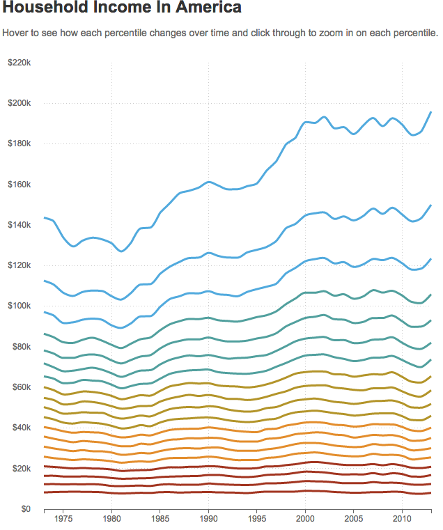

{% if COPY.labels.headline %}
{{ COPY.labels.headline }}
{% endif %} {% if COPY.labels.subhed %}
{{ COPY.labels.subhed }}
{% endif %}

{% if COPY.labels.footnote %}
Notes
{{ COPY.labels.footnote }}
{% endif %}